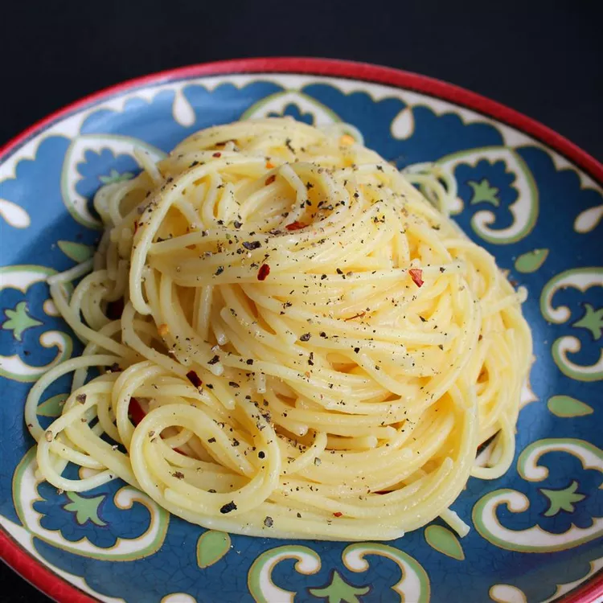

Cacio e Pepe

Description
Ingredients
- spaghetti
- 6 tablespoons olive oil
- 2 cloves garlic, minced
- 2 teaspoons ground black pepper
- 1 ¾ cups grated Pecorino Romano cheese
Steps
- Bring a large pot of lightly salted water to a boil.
Cook spaghetti in boiling water, stirring occasionally,
until tender yet firm to the bite, about 12 minutes. Reserve
1 cup cooking water, then drain spaghetti.
- Heat olive oil in a large skillet over medium heat. Cook and
stir garlic and pepper in hot oil until fragrant, 1 to 2 minutes.
Add cooked spaghetti and Pecorino Romano cheese. Ladle in 1/2 cup
reserved cooking water; stir until cheese is melted, about 1 minute.
Stir in more cooking water as needed, 1 tablespoon at a time, until
sauce coats spaghetti, about 1 minute more.
Home